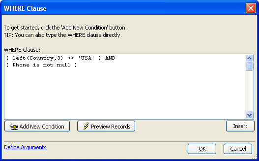
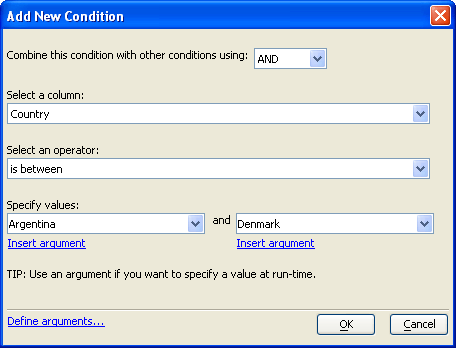

Creating a WHERE Clause
A WHERE clause filters (limits) the records that you will select with a SQL statement.

There are 2 different approaches to creating a WHERE clause.
Directly enter the SQL into the WHERE Clause text box. Optionally, click the Insert button to select functions, field names, and operators.
Click Add New Condition to display the Add New Condition dialog.

If this is the second or subsequent component of the WHERE clause, select "AND" or "OR" from the list box at top.
Pick a field from the Select a column list box.
Select an operator.
Depending on the operator selected, select one or more additional arguments.
Optionally, click Insert argument to use a previously defined argument instead of a constant value.
Click OK to save your inputs.
Optionally, click Preview Records to see how the WHERE clause will affect your SQL SELECT statement.
When finished, click OK to save your inputs and return to the calling dialog.
See Also